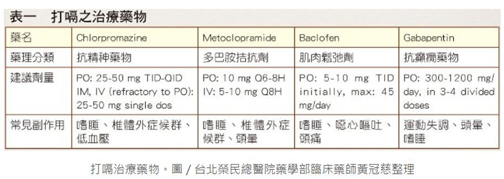

月號－健康大小事
月號－健康大小事吃飯時如果吃得又快又急，很容易會因為吞下過多空氣而頻頻打嗝！但醫師也提醒，打嗝經常過一陣子就會緩解，但如果打嗝超過48小時都還沒有停止，也要注意很可能是胃部疾病的徵兆；打嗝通常是一種常見且無害的生理現象，但若持續超過48小時尚未緩解，可稱為「持續性打嗝」，若超過1個月以上，醫學定義為「頑固型打嗝」，腸胃科醫師及藥師解析打嗝的可能原因、胃病及治療打嗝的方法。 |
| 常見的打嗝原因有哪些？ |
腸胃科醫師鄭泓志指出，打嗝通常是由於膈神經受刺激，導致橫膈膜肌肉收縮而產生的生理現象，常見於進食速度過快、吃得太飽、喝碳酸飲料或吞下過多空氣等行為都可能引發打嗝。 另外情緒激動或壓力過大也可能刺激到膈神經，進而引發打嗝，但也不用太過擔心，大多數的打嗝可以通過調整呼吸、喝水、按摩或改變姿勢等方式來停止。 |
| 打嗝超過48小時的胃疾病 |
如果打嗝持續時間超過48小時且伴隨其他胃部症狀，例如:咽喉灼痛、胸口悶痛感等症狀，甚至演變成長達1個月的「頑固性打嗝」，那麼就需要盡快就醫。 1.胃食道逆流：食道和胃之間的閉鎖機制受損，使胃酸進入食道，刺激神經，導致打嗝。 2.食道裂孔疝氣：胃的一部分通過食道裂孔進入胸腔。這可能導致逆流和打嗝。 3.腸胃炎：胃黏膜的發炎可能導致食物和液體逆流到食道，刺激神經，引起打嗝。 4.胃潰瘍：胃或十二指腸的潰瘍代表胃酸分泌過多，可能導致逆流和打嗝。 5.食道癌：食道癌或其他胃腸道相關的腫瘤可能壓迫神經，導致打嗝。 |
| 治療打嗝的藥物及手術有哪些？ |
台北榮民總醫院藥學部臨床藥師黃冠慈就曾列舉，治療持續性打嗝的方法包括藥物和手術治療，常用的藥物包括肌肉鬆弛劑、鎮靜劑、止痛劑、抗癲癇藥物及抗精神病藥物等。 |
 |
醫師指出，如果藥物治療無效，則可能需要評估做膈神經手術或植入可充電的呼吸調節器。如果懷疑打嗝是由於腸胃疾病引起，則通常會進行腸胃鏡或抽血檢查，以確定病因並進行相應治療。一般來說，打嗝通常是無害的，且可從飲食習慣中獲得改善，例如:吃飯細嚼慢嚥不說話、不喝碳酸飲料或酒精、不暴飲暴食導致胃脹及飯後多走動避免久坐，都可避免打嗝。但如果持續時間過長且伴隨其他胃部症狀，就需要尋求醫療干預，並通過適當的治療方法，治療持續性打嗝，從而改善患者的健康狀況。 |
| 資料來源 打嗝打不停也是種病！醫解析「持續性打嗝」常見 5 種胃疾病及 4 種止嗝藥物 - Heho健康 |